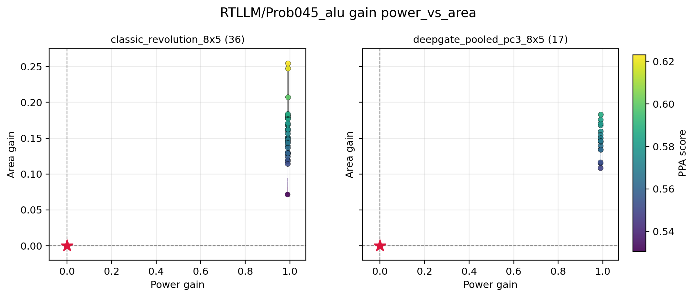

T94 Direct PPA Pareto Supplement
Classic wins the aggregate screen. The representative figure below shows the clearest RTLLM front-breadth loss: both methods reach high power gain on Prob045, but classic produces more candidates and a wider area-gain range.
| Method | Mean HV | Mean Pareto Points | Mean Ref-Beating |
|---|---|---|---|
| classic_revolution_8x5 | 0.1406 | 3.25 | 8.00 |
| deepgate_pooled_pc3_8x5 | 0.1040 | 1.75 | 4.50 |

Full generated figure tree: ../../analysis/ppa_distribution/figures/all_backends/
Full linked archive/PPA viewer: ../qd_ppa_viewer/index.html